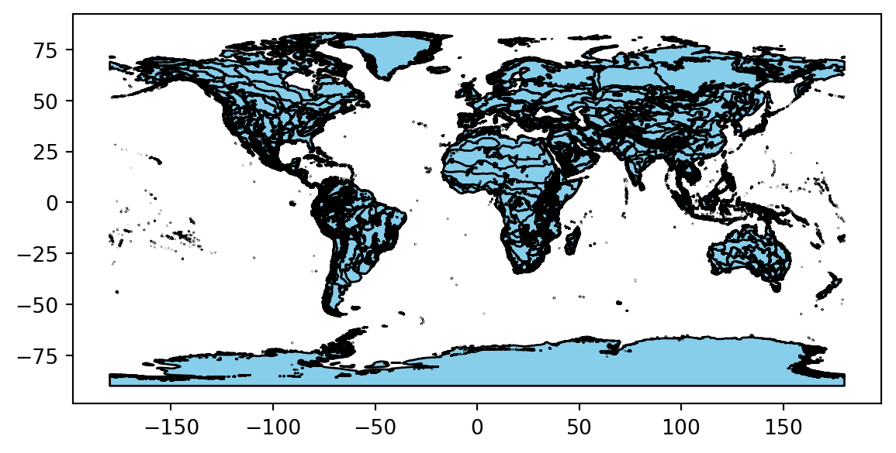

%%bash
find ~/earth-analytics/data/species-distribution -name '*.shp' /home/runner/earth-analytics/data/species-distribution/wwf_ecoregions/wwf_ecoregions.shpIn the imports cell, we’ve included a number of packages that you will need. Add imports for packages that will help you:
For this challenge, you will need to save some data to the computer you’re working on. We suggest saving to somewhere in your home folder (e.g. /home/username), rather than to your GitHub repository, since data files can easily become too large for GitHub.
The home directory is different for every user! Your home directory probably won’t exist on someone else’s computer. Make sure to use code like pathlib.Path.home() to compute the home directory on the computer the code is running on. This is key to writing reproducible and interoperable code.
The code below will help you get started with making a project directory
'your-project-directory-name-here' and 'your-gbif-data-directory-name-here' with descriptive namesls ~/earth-analytics/dataTrack observations of Taciyagnunpa across different ecoregions! You should be able to see changes in the number of observations in each ecoregion throughout the year.
The ecoregion data will be available as a shapefile. Learn more about shapefiles and vector data in this Introduction to Spatial Vector Data File Formats in Open Source Python
The ecoregion boundaries take some time to download – they come in at about 150MB. To use your time most efficiently, we recommend caching the ecoregions data on the machine you’re working on so that you only have to download once. To do that, we’ll also introduce the concept of conditionals, or code that adjusts what it does based on the situation.
Read more about conditionals in this Intro Conditional Statements in Python
your/url/here with the URL you found, making sure to format it so it is easily readable. Also, replace ecoregions_dirname and ecoregions_filename with descriptive and machine-readable names for your project’s file structure.# Set up the ecoregion boundary URL
url = "your/url/here"
# Set up a path to save the data on your machine
the_dir = os.path.join(project_data_dir, 'ecoregions_dirname')
# Make the ecoregions directory
# Join ecoregions shapefile path
a_path = os.path.join(the_dir, 'ecoregions_filename.shp')
# Only download once
if not os.path.exists(a_path):
my_gdf = gpd.read_file(your_url_here)
my_gdf.to_file(your_path_here)# Set up the ecoregion boundary URL
ecoregions_url = (
"https://storage.googleapis.com/teow2016/Ecoregions2017.zip")
# Set up a path to save the data on your machine
ecoregions_dir = os.path.join(data_dir, 'wwf_ecoregions')
os.makedirs(ecoregions_dir, exist_ok=True)
ecoregions_path = os.path.join(ecoregions_dir, 'wwf_ecoregions.shp')
# Only download once
if not os.path.exists(ecoregions_path):
ecoregions_gdf = gpd.read_file(ecoregions_url)
ecoregions_gdf.to_file(ecoregions_path)ERROR 1: PROJ: proj_create_from_database: Open of /usr/share/miniconda/envs/learning-portal/share/proj failedLet’s check that that worked! To do so we’ll use a bash command called find to look for all the files in your project directory with the .shp extension:
/home/runner/earth-analytics/data/species-distribution/wwf_ecoregions/wwf_ecoregions.shpYou can also run bash commands in the terminal!
Learn more about bash in this Introduction to Bash
Download and save ecoregion boundaries from the EPA:
a_path with the path your created for your ecoregions file.GeoDataFrame easier to work with. Many of the same methods you learned for pandas DataFrames are the same for GeoDataFrames! NOTE: Make sure to keep the 'SHAPE_AREA' column around – we will need that later!.plot() to make sure the download worked.# Open up the ecoregions boundaries
gdf = gpd.read_file(a_path)
# Name the index so it will match the other data later on
gdf.index.name = 'ecoregion'
# Plot the ecoregions to check download--------------------------------------------------------------------------- NameError Traceback (most recent call last) Cell In[5], line 2 1 # Open up the ecoregions boundaries ----> 2 gdf = gpd.read_file(a_path) 4 # Name the index so it will match the other data later on 5 gdf.index.name = 'ecoregion' NameError: name 'a_path' is not defined
# Open up the ecoregions boundaries
ecoregions_gdf = (
gpd.read_file(ecoregions_path)
.rename(columns={
'ECO_NAME': 'name',
'SHAPE_AREA': 'area'})
[['name', 'area', 'geometry']]
)
# We'll name the index so it will match the other data
ecoregions_gdf.index.name = 'ecoregion'
# Plot the ecoregions to check download
ecoregions_gdf.plot(edgecolor='black', color='skyblue')
For this challenge, you will use a database called the Global Biodiversity Information Facility (GBIF). GBIF is compiled from species observation data all over the world, and includes everything from museum specimens to photos taken by citizen scientists in their backyards. We’ve compiled some sample data in the same format that you will get from GBIF.
gbif_url. You can get sample data from https://github.com/cu-esiil-edu/esiil-learning-portal/releases/download/data-release/species-distribution-foundations-data.zip# Load the GBIF data
gbif_df = pd.read_csv(
gbif_url,
delimiter='\t',
index_col='gbifID',
usecols=['gbifID', 'decimalLatitude', 'decimalLongitude', 'month'])
gbif_df.head()--------------------------------------------------------------------------- NameError Traceback (most recent call last) Cell In[7], line 3 1 # Load the GBIF data 2 gbif_df = pd.read_csv( ----> 3 gbif_url, 4 delimiter='\t', 5 index_col='gbifID', 6 usecols=['gbifID', 'decimalLatitude', 'decimalLongitude', 'month']) 7 gbif_df.head() NameError: name 'gbif_url' is not defined
# Define the download URL
gbif_url = (
"https://github.com/cu-esiil-edu/esiil-learning-portal/releases/download"
"/data-release/species-distribution-foundations-data.zip")
# Set up a path to save the data on your machine
gbif_dir = os.path.join(data_dir, 'gbif_veery')
os.makedirs(gbif_dir, exist_ok=True)
gbif_path = os.path.join(gbif_dir, 'gbif_veery.zip')
# Only download once
if not os.path.exists(gbif_path):
# Load the GBIF data
gbif_df = pd.read_csv(
gbif_url,
delimiter='\t',
index_col='gbifID',
usecols=['gbifID', 'decimalLatitude', 'decimalLongitude', 'month'])
# Save the GBIF data
gbif_df.to_csv(gbif_path, index=False)
gbif_df = pd.read_csv(gbif_path)
gbif_df.head()| decimalLatitude | decimalLongitude | month | |
|---|---|---|---|
| 0 | 40.771550 | -73.97248 | 9 |
| 1 | 42.588123 | -85.44625 | 5 |
| 2 | 43.703064 | -72.30729 | 5 |
| 3 | 48.174270 | -77.73126 | 7 |
| 4 | 42.544277 | -72.44836 | 5 |
To plot the GBIF data, we need to convert it to a GeoDataFrame first. This will make some special geospatial operations from geopandas available, such as spatial joins and plotting.
your_dataframe with the name of the DataFrame you just got from GBIFlongitude_column_name and latitude_column_name with column names from your `DataFrameGeoDataFrame of the GBIF data.| month | geometry | |
|---|---|---|
| 0 | 9 | POINT (-73.97248 40.77155) |
| 1 | 5 | POINT (-85.44625 42.58812) |
| 2 | 5 | POINT (-72.30729 43.70306) |
| 3 | 7 | POINT (-77.73126 48.17427) |
| 4 | 5 | POINT (-72.44836 42.54428) |
| ... | ... | ... |
| 162770 | 5 | POINT (-78.75946 45.0954) |
| 162771 | 7 | POINT (-88.02332 48.99255) |
| 162772 | 5 | POINT (-72.79677 43.46352) |
| 162773 | 6 | POINT (-81.32435 46.04416) |
| 162774 | 5 | POINT (-73.82481 40.61684) |
162775 rows × 2 columns